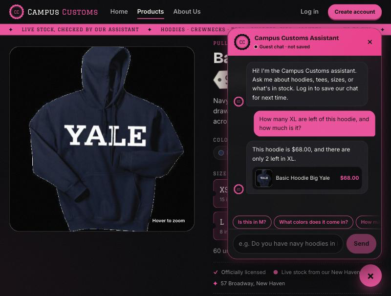
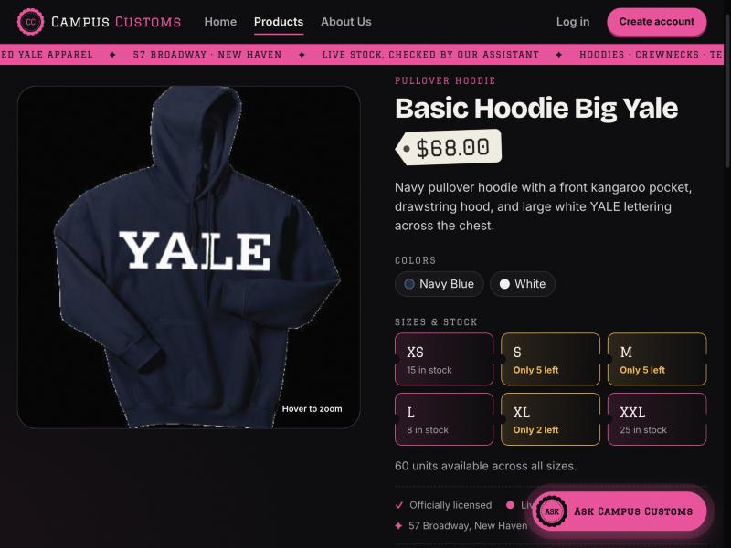
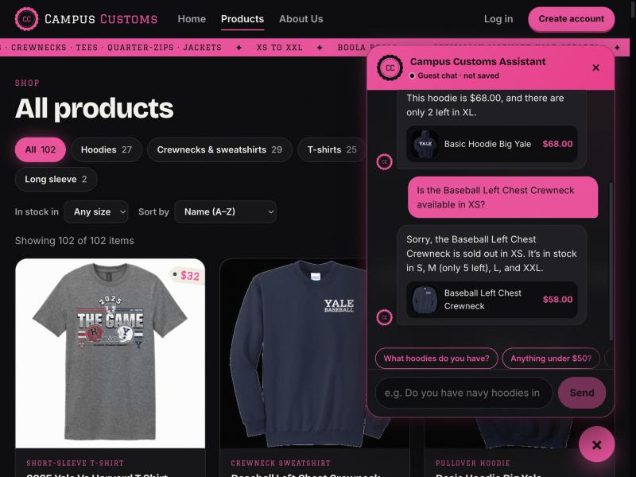
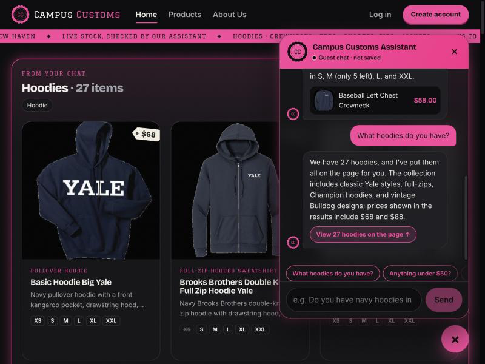
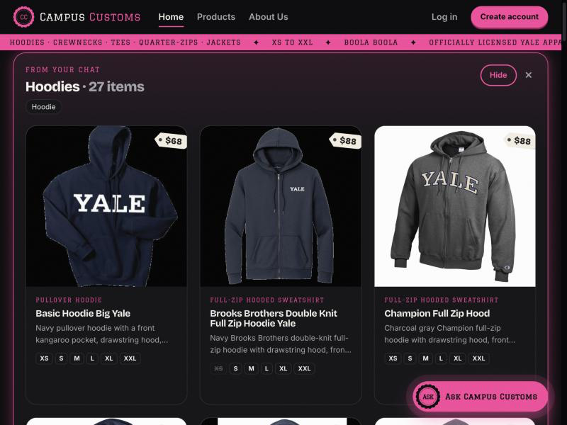
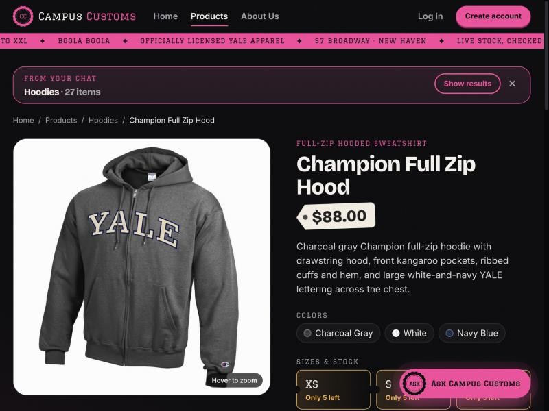
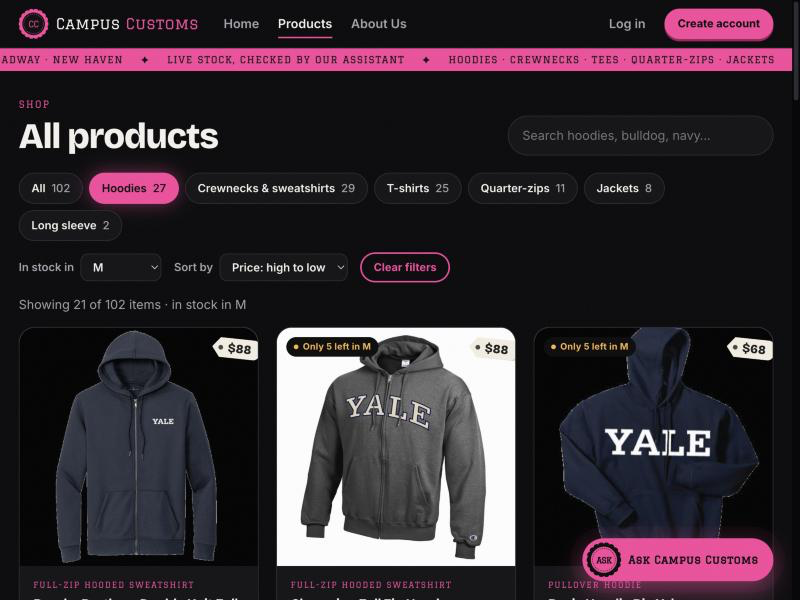
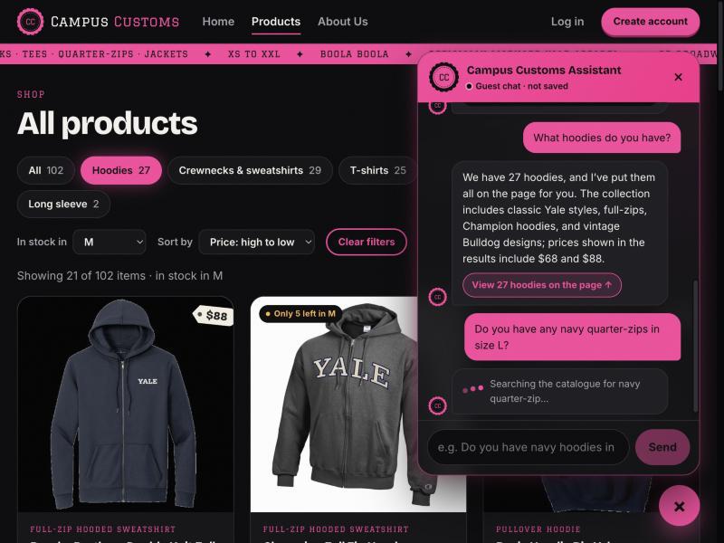
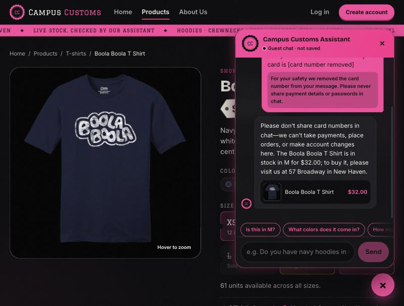

Campus Customs: App Check
Problem 11 · Live site tested on 2026-10-03 · Frontend http://localhost:5173 (React + Vite) → FastAPI :8000 → PydanticAI agent (gpt-5.6-luna via Portkey) → data/campus_customs.db. Screenshots were taken in the running app as a guest shopper. Click any image to open it full size.
| # | Check | Result |
|---|---|---|
| 1 | Chat checks an item's inventory level, with honest stock and price from the database | PASS |
| 2 | Dynamic search-result cards appear after a category question ("What hoodies do you have?") | PASS |
| 3 | Problem 9 usability feature: Products page filters & sorting (plus live progress and the sensitive-data guard) | PASS |
Check 1: Chat checks inventory (honest stock & price) PASS
Database values at test time (sqlite3 data/campus_customs.db):
| Product | Price | Stock by size |
|---|---|---|
| Basic Hoodie Big Yale | $68.00 | XS 15 · S 5 · M 5 · L 8 · XL 2 · XXL 25 |
| Baseball Left Chest Crewneck | $58.00 | XS 0 · S 15 · M 5 · L 25 · XL 0 · XXL 25 |

Proves the chat reads live inventory: $68.00 and 2 in XL match the database exactly. It also knew "this hoodie" meant the page being viewed, and showed a product card built from the database.


The chat answer, the website, and the database all agree.


Honest about stock: it says "sold out" clearly (XS = 0), never offers the size, and lists the real alternatives (M = 5 flagged as low).
Check 2: Dynamic search-result cards after a category question PASS

Proves the chat → page contract: the agent returned structured matches (a search id plus the title "Hoodies"), and the frontend rendered them as cards. The 27 matches the number of hoodies in the catalogue.


The search results are real product cards on the page, not just text in the chat.


The Problem 3 detail-page behavior still works for cards the chat put on the page.
Check 3: Problem 9 usability feature PASS
Main: Products page filters & sorting (F1)

/products?category=hoodie&size=M&sort=price-desc: the Hoodies 27 chip is active, "In stock in" is set to M, sorted Price: high to low. The page shows "Showing 21 of 102 items · in stock in M", the $88 full-zips come first, and cards with low M stock carry an "Only 5 left in M" badge.
The filters work and are honest: the database confirms 21 hoodies have M in stock, and both "Only 5 left in M" items have exactly M = 5. The filters live in the URL, so the view can be shared and Back works.
Also shown: two agent/backend improvements


The streaming endpoint sends tool progress in real time, so the shopper isn't left staring at a frozen chat.


The number never reached the AI or the database: a search of chat_messages for it finds 0 rows, and it appears nowhere on the page.
Issues found during testing (and fixed)
| Issue | Fix | Status |
|---|---|---|
| Price tag legibility. On product cards the hang tag's price was pink-on-cream in the varsity font, and "$68" could be misread as "$88". | Price tags now use the bold display font with even-width digits, in dark ink. A card's .price class was overriding the tag color and was removed from the tag. |
Fixed (screenshot 2a/2b taken after the fix) |
| Wrong buying instructions. After refusing a card number, the agent once told the shopper to "complete checkout" on the site, but the site has no cart or checkout. | prompts/prompt.md now states that the website has no cart or online checkout and that buying happens at 57 Broadway. On retest, the reply was "…please visit us at 57 Broadway in New Haven." |
Fixed (screenshot 3c) |